THE AMERICAS
CANADA
Canada has two official languages, and distinct comics cultures have developed in English and French Canada which makes it unique from others. The English tends to follow American trends, and the French, Franco-Belgian ones, with little crossover between the two cultures.
In French Canada indigenous comics are called BDQ or bande dessinee quebecoise- comics from Quebec. Cartoons with speech balloons in Quebec date to the late 1700s. BDQ have alternately flourished and languished throughout Quebec's history as the small domestic market has found it difficult to compete with foreign imports. Many cartoonists from Quebec have made their careers in the United States.
During World War II, trade restrictions led to the flourishing of a domestic comic book industry, whose black-and-white "Canadian Whites" contained original stories of heroes such as Nelvana of the Northern Lights as well as American scripts redrawn by Canadian artists. The war's end saw American imports and domestic censorship lead to the death of this industry.
The Canadian Council for the Arts gives out grants to comic projects and the community has kept steady in modern times.
UNITED STATES
American comic books are one of the three major comic book industries globally. While the form originated in 1933, American comic books first gained popularity after the 1938 publication of Action Comics, which included the debut of the superhero Superman. This was followed by a superhero boom that lasted until the end of World War II.
After the war, while superheroes were marginalized, the comic book industry rapidly expanded and genres such as horror, crime, science fiction and romance became popular. The 1950s saw a gradual decline, due to a shift away from print media in the wake of television[1] and the impact of the Comics Code Authority.[1] The late 1950s and the 1960s saw a superhero revival and superheroes remained the dominant character archetype throughout the late 20th century into the 21st century.
Some fans collect comic books, helping drive up their value. Some have sold for more than US$1 million. Comic shops cater to fans, selling comic books, plastic sleeves ("bags") and cardboard backing ("boards") to protect the comic books. An American comic book is also known as a floppy comic. It is typically thin and stapled, unlike traditional books. American comics have spawned some of the highest grossing media franchises in the world besides Japan.
 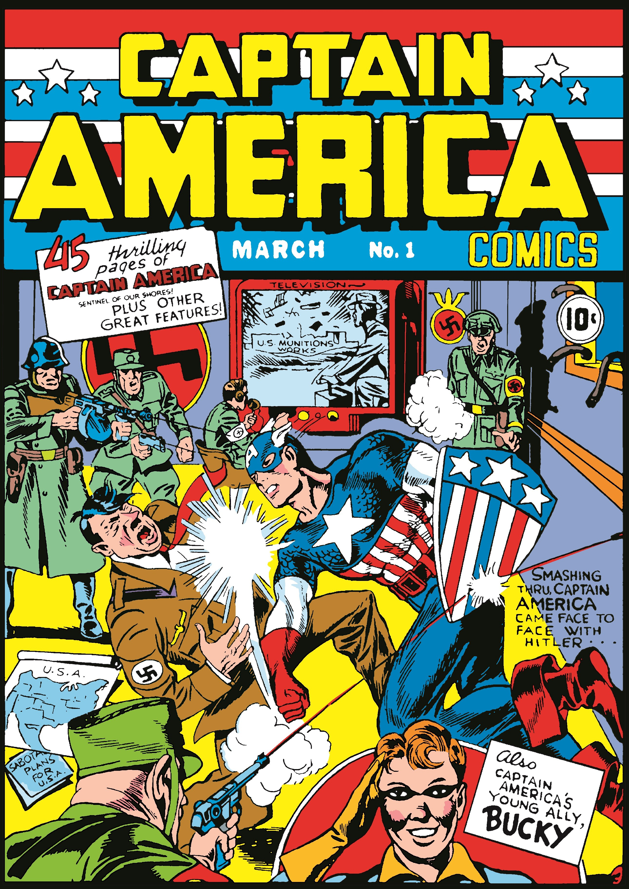
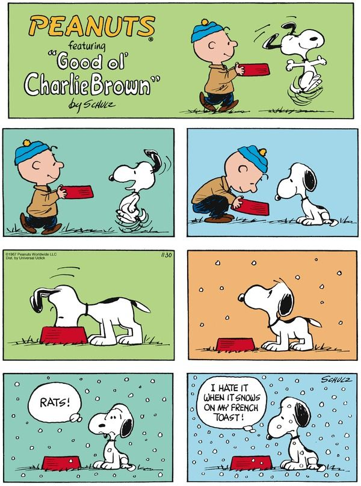
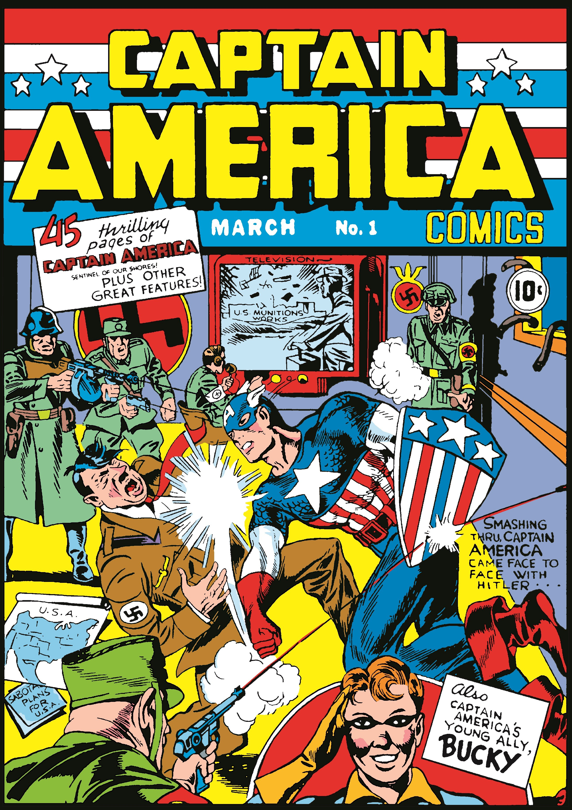
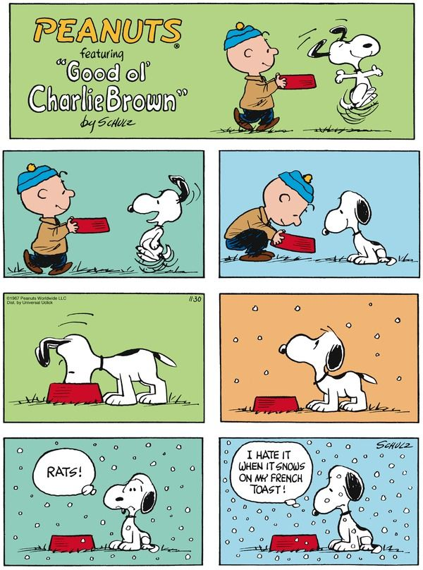

MEXICO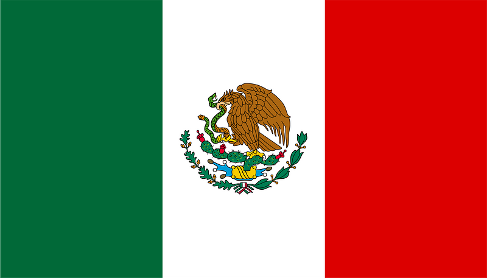
Centuries-old pre-Columbian codices and other ancient documents could be seen as primary sources of the comics culture in the country.
Another important influence has been the work of Jose Guadalupe Posada whose satirical cartoons helped create a political identity of visual art. Political satire was quite a strong movement during the Porfiriato (1884–1911). Many newspapers became almost legendary because of their political comics and vignettes that were published during this era and during the subsequent Mexican Revolution (1910-1920). As a result of the harsh government repression, the political cartoon ("caricatura politica") practically became the only means of free expression in those turbulent years.
From the 1930s through the 1970s, Mexico had a thriving comic-book industry with several diverse genres. Because of their success some comic book titles and their characters were even adapted into radio dramas and live action TV series and films during the 1960s and 1970s. They have had a huge boom in sc-fi and fantasy comics since the 1980s.
BRAZIL
Known as HQs, gibis, revistinhas, historietas, quadrinhos or tirinhas), Brazilian comics started in the 19th century, adopting a satirical style known as cartoon, charges or caricature that would later be cemented in the popular comic strips. Brazilian comics have a long history, that goes back to the 19th century. As a charge, the first drawing was circulated in 1837, sold in separate like a lithography, by Manuel de Araujo Porto-alegre. This author would latter create a magazine of political humor in 1844.
Released on October 11, 1905, the magazine O Tico-Tico is considered the first comic book in the country. The magazine lost popularity in the 1930s when new comic books and newspaper comic strips were released in Brazil. The magazine ended in 1957, with some republications until 1977.
Brazil has faced challenges in the global market but manga style influence and comic conventions help thrive the market in modern days.
ARGENTINA
Argentine comics are one of the most important comic traditions internationally, and the most important within Latin America, living its "Golden Age" between the 1940s and the 1960s. Soon after, in 1970, the theorist Oscar Masotta synthesized its contributions in the development of their own models of action comics (Oesterheld, Hugo Pratt), humor comics (Divito, Quino) and folkloric comics (Walter Ciocca) and the presence of other artists (Hugo Pratt and Alberto Breccia).
The first cartoons to appear in Argentina were editorial cartoons in political satire magazines at the end of the 19th century. These cartoons, originally single panels, quickly evolved to multiple panel constructions with sequential action. Many used methods such as text indicating dialogue emanating from the speaker's mouth, or text below the drawings for dialogue and explanation.
Argentina creators started self publishing- especially through the zine format in modern times.
 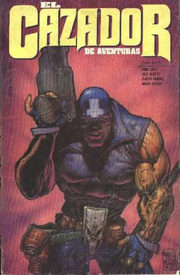
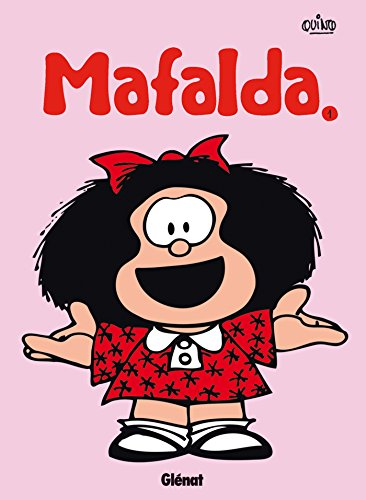
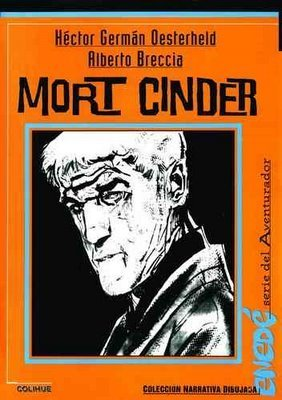
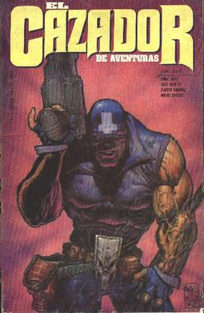
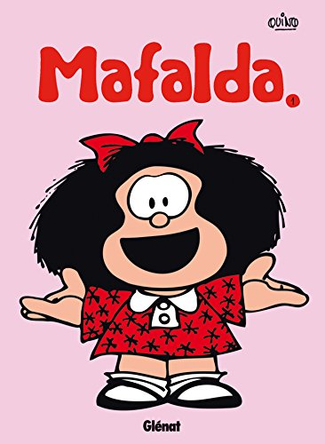
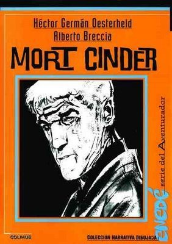